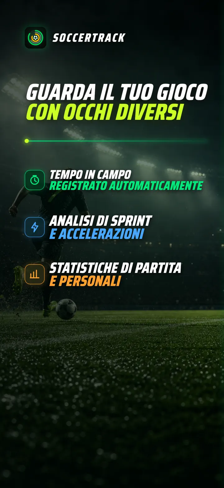
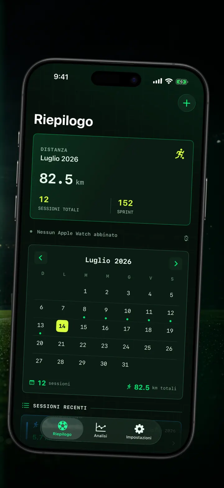
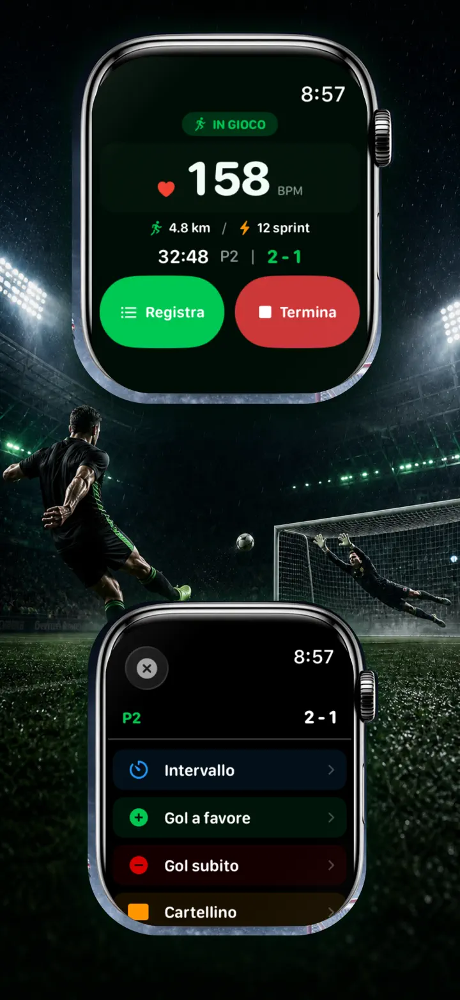
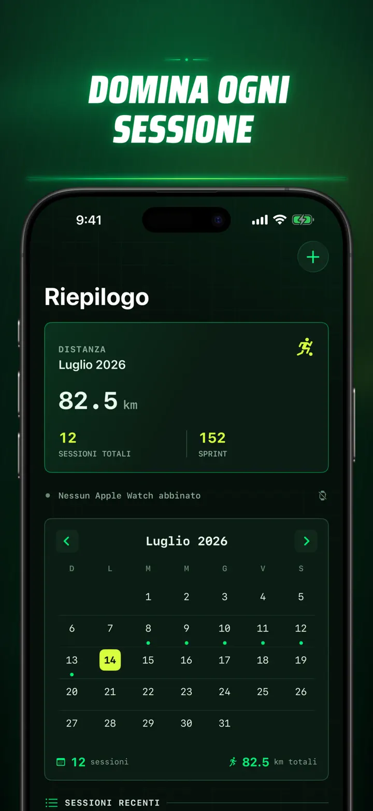
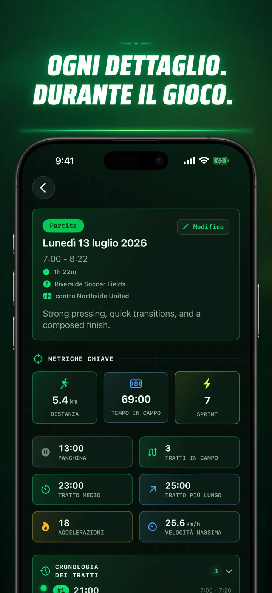
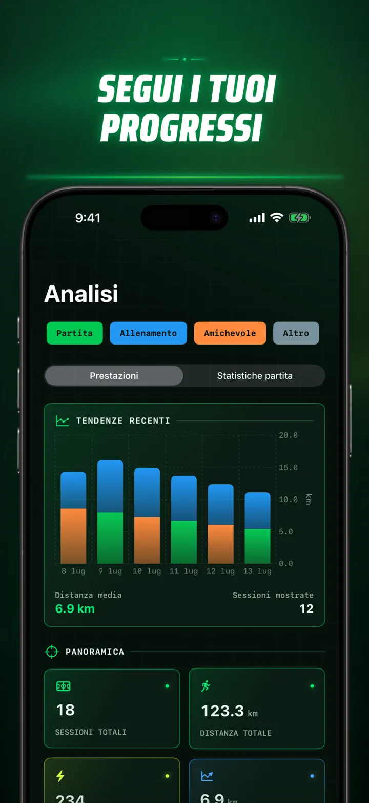
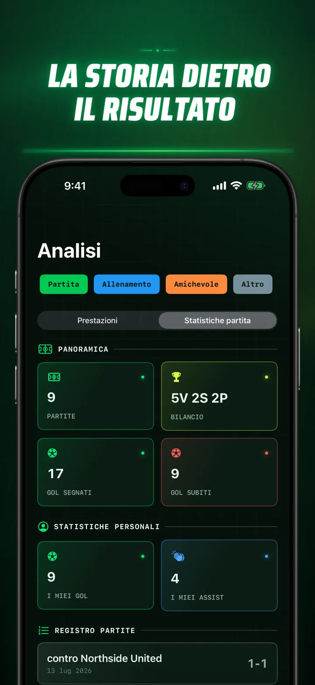
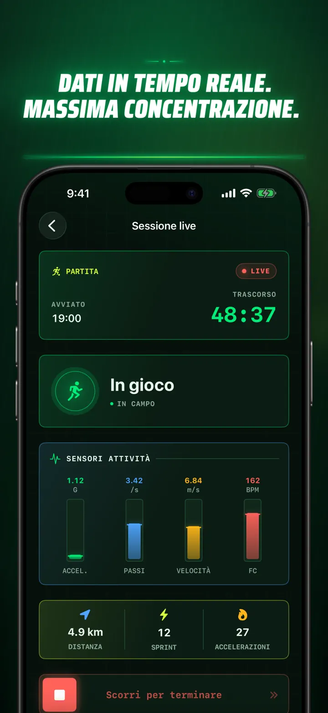
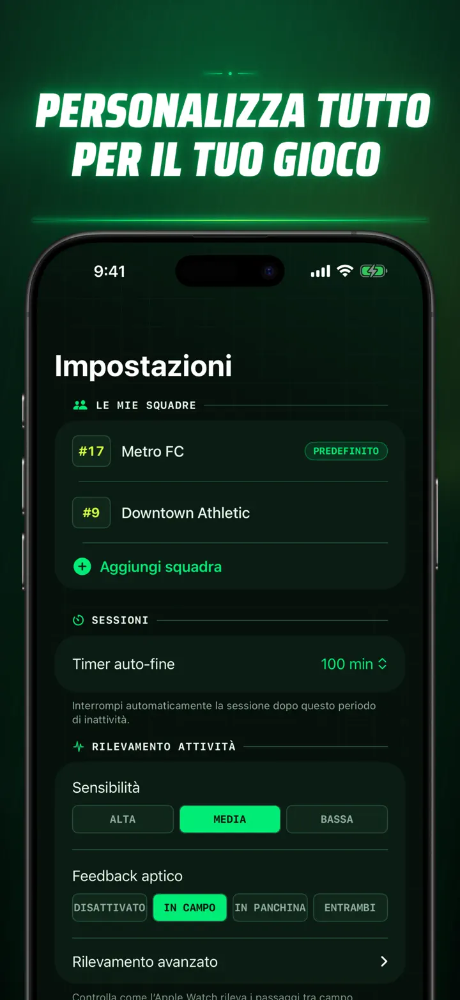
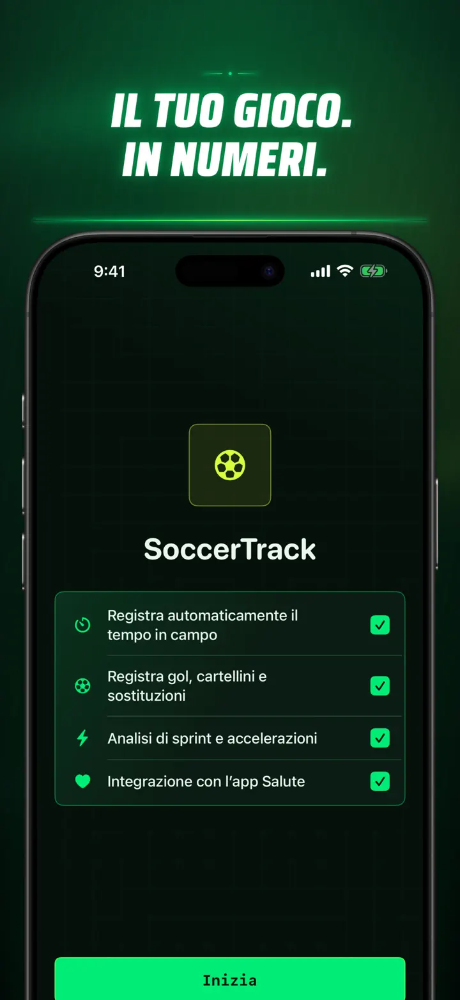

Soccer Time Track
Calcio: minuti e analisi
Avvia una sessione e gioca. Apple Watch distingue automaticamente campo e panchina e registra metriche live, sprint, eventi e tendenze.
Scarica dall’App Store
Informazioni sull’app
Guarda la tua partita da un’altra prospettiva.
Soccer Time Track trasforma Apple Watch in un assistente da partita per chi vuole capire molto più del risultato finale. Avvia dal polso, concentrati sul gioco e rivedi poi su iPhone un quadro dettagliato della tua prestazione.
TEMPO IN CAMPO AUTOMATICO
Scopri quando eri davvero in azione. I segnali di movimento, allenamento e posizione aiutano a distinguere gioco, attività ridotta e panchina. Avrai:
- Tempo in campo e in panchina
- Frazioni di gioco e una cronologia chiara della sessione
- Un resoconto dettagliato di come si è svolta l’attività
LA PARTITA, DAL POLSO
Scegli Partita, Allenamento, Amichevole o Altro. Durante il gioco registra:
- Gol fatti e subiti
- I tuoi gol e assist
- Cartellini gialli e rossi
- Sostituzioni e cambi di periodo
LA TUA PRESTAZIONE, MISURATA
Vai oltre i minuti con dati come:
- Distanza
- Velocità media e massima
- Sprint e scatti ad alta intensità
- Frequenza cardiaca e calorie attive
- Cadenza e accelerazione
DATI LIVE, MASSIMA CONCENTRAZIONE
Un iPhone abbinato può mostrare le metriche in diretta mentre Apple Watch continua a registrare l’allenamento. Tu resti concentrato sulla partita e i dati prendono forma in background.
SEGUI I TUOI PROGRESSI
Raccogli partite, allenamenti, amichevoli e altre sessioni in un unico storico. Esplora tendenze e record personali, confronta le prestazioni e aggiungi squadra, numero di maglia, avversario, luogo e note per conservare il contesto di ogni risultato.
Ti servono i dati altrove? Esporta sessioni, frazioni di gioco ed eventi in formato CSV o JSON.
CREATO PER APPLE WATCH E APPLE HEALTH
Con la tua autorizzazione, Soccer Time Track utilizza dati di allenamento, frequenza cardiaca, movimento e posizione per creare analisi e salvare gli allenamenti di calcio completati in Apple Health. Il rilevamento automatico richiede Apple Watch. Puoi anche aggiungere una sessione manualmente da iPhone.
I TUOI DATI, LA TUA PARTITA
Le sessioni restano sui tuoi dispositivi e, con la sincronizzazione iCloud attiva, nel tuo database iCloud privato. Soccer Time Track non richiede account, non contiene pubblicità e non usa servizi di analisi di terze parti.
Non chiederti più quanto hai giocato. Scopri come hai usato ogni minuto.
Informativa sulla privacy: https://masawata.net/SoccerTimeTrack/privacy-policy.html Termini di servizio: https://www.apple.com/legal/internet-services/itunes/dev/stdeula/
Screenshot









Soccer Time Track
Avvia una sessione e gioca. Apple Watch distingue automaticamente campo e panchina e registra metriche live, sprint, eventi e tendenze.
Scarica dall’App Store